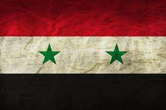

Server:
In computing, a server is a piece of computer hardware or software (computer program) that provides functionality for other programs or devices, called "clients".
This architecture is called the client-server model. Servers can provide various functionalities, often called "services",
such as sharing data or resources among multiple clients or performing computations for a client. A single server can serve multiple clients, and a single client can use multiple servers.
A client process may run on the same device or may connect over a network to a server on a different device.
Typical servers are database servers area are:
servers mail servers
print servers
web servers
game servers
application servers.
Home | Syria and its famous civil war
This is what syria is famous for and what you can do there
You may know syria as a beautifl country now but with all the war it changed alot.
But the town near the capital city is The Great Douma, a well populated town but also small due to many farm land which was amazing.

Although the flag changed to a different one i think i prefer this one
Syria, officially the Syrian Arab Republic, is a country in West Asia located in the Eastern Mediterranean and the Levant.
It is bounded by the Mediterranean Sea to the west, Turkey to the north, Iraq to the east and southeast, Jordan to the south, and Israel and Lebanon to the southwest.
Cyprus lies to the west across the Mediterranean Sea. It is a unitary republic that consists of 14 governorates (subdivisions).
A country of fertile plains, high mountains, and deserts, Syria is home to diverse ethnic and religious groups, including the majority Arabs, Kurds, Turkmens, Assyrians, Circassians, Armenians, Albanians, Greeks, and Chechens. Religious groups include Muslims, Christians, Alawites, Druze, and Yazidis.
The capital and largest city is Damascus, followed by Aleppo, Homs, Latakia, Hama, Deirezor and Raqqa. Arabs are the largest ethnic group, and Sunni Muslims are the largest religious group.
Syria is now the only country that is governed by Ba'athists, who advocate Arab socialism and Arab nationalism.
|
Population
|
Density
|
|
The population of syria is 22,933,531
|
The density is 188.3/km^2
|
|
GDP is a total of $11.08 billion
|
GDP per capita is $2,900
|